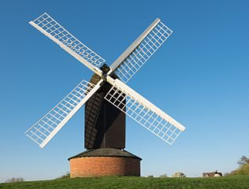

<!-- <ion-header>
	<ion-toolbar color="primary">
		<ion-title>test</ion-title>
	</ion-toolbar>
</ion-header> -->

<ion-content>
	<div class="container">
		<!-- 		<div class="column">
			
		</div> -->
		<div class="column">
			<canvas #canvasEl (click)="pick(canvasEl, $event)" [width]='50' [height]="500"></canvas>
			<!-- <canvas #canvasEl (mousemove)="pick(canvasEl, $event)" [width]='50' [height]="500"></canvas>
		 -->
		</div>
	</div>

	<button (click)="onClick(canvasEl)">Invert Colors</button>
</ion-content>
